Behavioral modeling#
In this second chapter we will explain the basics of behavioral modeling with Alloy. As running example we will explore the design of a simple file sharing web application, where a user can upload files making them available for others to download, provided that they have access to a unique single-use token that was associated with shared files. Moreover, uploaded files can be deleted, but the user can for a while undo this action: deleted files are moved to a trash bin from where they can be restored. Upon explicit user request or after a certain period of time, the trash bin is automatically emptied, making all files in it no longer available.
More specifically, in this chapter we will show how Alloy can be used in the following design tasks:
Formally specify, at a very abstract level, the structure and behavior of this web app.
Validate this specification by simulation, namely using the Alloy Analyzer to check that it allows some of the expected behaviors.
Verify that this specification entails some of the expected properties of our design.
Specifying transition systems#
Transition systems are one of the most standard formalisms to reason about the behavior of a software system. A transition system contains the different states a system may be in while evolving over time, identifying which of these are possible initial states, and clearly depicting how the system can evolve by identifying the transitions that connect each state to every possible succeeding state.
The first step when specifying a transition system is to describe the
structure of its states. As we have seen in chapter Structural modeling, in Alloy the structure of a system is
described using signatures and fields, all represented by mathematical relations.
By default, in Alloy the value of all signatures and fields is
immutable. To declare a mutable (or variable) signature or field it is necessary to add the
var keyword before the respective declaration.
The state of our file sharing web app will be described using the following mutable structures: the set of files currently uploaded to the app, the set of items currently trashed, and a binary relation that associates shared files with the respective access tokens. We start
by declaring two immutable signatures to denote the universe of atoms available throughout the complete trace: File for the set of available files, and Token for the set of available tokens.
The, relation shared is declared as a variable field inside the File signature, associating each file with a set of Token at each moment. The set of uploaded files can be declared as a mutable subset of signature File (the set of all possible files), and trashed as a mutable subset of uploaded.
sig Token {}
sig File {
var shared : set Token
}
var sig uploaded in File {}
var sig trashed in uploaded {}
Having described the state of our system we can now proceed to
specify its intended behavior, namely what are the initial states and
the possible transitions. Unlike most state-based formal methods, Alloy has no special syntax to
declare the initial states or events that originate transitions. Instead it follows the idea,
introduced by Leslie Lamport in the Temporal Logic of Actions [TOPLAS94], of specifying a
transition system implicitly by means of a temporal logic formula
that dictates which are its valid behaviors. In temporal logic we have operators that can be used to specify how mutable structures evolve over time. Temporal logics differ on how they define what exactly is a behavior of a system. Alloy supports a linear time temporal logic, where a behavior of a system is a trace, an
infinite sequence of states fully describing a possible path in the respective transition system. The most well-known operators of linear time temporal logic, also supported by Alloy, are always, that forces the enclosed formula to be valid in all future states, and eventually, that forces the enclosed formula to be valid in some future state.
The temporal logic specification of the behavior of our file sharing app should allow the following traces, all examples of valid behaviors in the underlying transition system.
{kind=link}
On the other hand, the specification should not allow the following traces, because they do not represent valid behaviors. The invalid initial states and transitions are identified in red.
{kind=link}
In the first trace we have an invalid initial state where there exist already uploaded files, and a transition where simultaneously an file is restored and another file is deleted. In the second trace we have two invalid transitions: in the first we have a simultaneous upload and delete, and in the second we have a file that is no longer uploaded without being first put in the trash bin with a deletion. In the third trace we also have two invalid transitions: in the first we have two files that are simultaneously deleted, and in the second a transition where the trash bin is not fully emptied. Some readers might argue that these two transitions are not problematic and could be allowed. In our specification they will be ruled out, but indeed it is perfectly reasonable to conceive a file sharing app where they are possible. One of the goals of the design phase is precisely to explore such alternative behaviors and choose the one that better fits our goals.
The formula specifying a transition system can typically be divided in two
parts: one formula that specifies what are the valid initial states,
and another that specifies how the system can evolve from those initial states. In the initial state of our app no files are uploaded (and, consequently, no files are trashed) and no files have access tokens assigned.
If a formula inside a fact contains no
temporal operators, namely if it is a normal relational logic formula, similar to the ones we have specified in the Structural modeling chapter,
then the fact is only required to hold in the initial state of every trace. Formulas without temporal operators can thus be used to specify the valid initial states.
In our example, the initial states must obey the
following fact. Note that init is just the label assigned to the fact, not a special keyword for facts constraining the initial states.
fact init {
// Initially there are no files uploaded nor shared
no uploaded
no shared
}
To specify the valid transitions, it is easier to specify separately each of the possible
actions (or events) in our system. Each action will originate different transitions when executed in different states. In
the case of the file sharing app we have six actions: upload a file, delete a file, restore
a file, empty the trash, share a file with a token, and download the file associated with a token.
Each action will be specified in separate (parametrized) predicate that holds in a particular state of a trace iff that action can
occur in that state and the next state of the trace is a valid outcome
of the action. As we have already seen in the Structural modeling chapter, a predicate
is a named formula that is only required to hold when invoked.
For example, in our specification we will have a predicate upload with a file parameter, and the call upload[f] will be will be true in a state iff file f is uploaded in that state.
Assuming we have specified our six actions in the respective predicates (addressed in the next section), we can constrain the valid
transitions of the system by imposing a fact that requires one of the action predicates to
hold at each
possible state during the system evolution. To impose a constraint on all the states of a trace, we can use
the temporal operator always followed by the desired formula.
With this operator we can easily specify the valid transitions of our
system with the following temporal logic formula, where all the action predicates are invoked.
fact transitions {
// The system must only evolve according to the defined actions
always (
(some f : File | upload[f] or delete[f] or restore[f]) or
(some f : File, t : Token | share[f,t]) or
(some t : Token | download[t]) or
empty
)
}
Note the usage of or to allow any possible action predicate to hold in each state and the usage of the existential quantifier some to non-deterministically choose which file and / or token each action acts on. Also note that the parenthesis after the always are required because this is a unary operator with higher precedence than any binary operator. When a predicate have no parameters, the brackets can be omitted when calling it, as is the case of empty.
Specifying actions#
As mentioned above actions are typically specified in predicates that relate pairs of consecutive states. An action predicate checks if the action can occur in a state and if the next state is one of its valid outcomes (or outcome if the action is deterministic).
These two conditions are usually called the guard and
the effect of the action, respectively. To specify the effect we
need to somehow evaluate a formula in the next state or
refer to the value of sets and relations in the next state. To
evaluate a formula in the next state we precede it with the temporal
operator after. To evaluate an expression in the next state we
append it the prime operator '.
For example, the parameterless
empty action predicate can be specified by the conjunction of four formulas as follows.
pred empty {
some trashed // guard
no trashed' // effect on trashed
uploaded' = uploaded - trashed // effect on uploaded
shared' = shared // no effect on shared
}
The first formula is the guard of the action, and it states that the trash
can only be emptied in a state if the set trashed contains some files.
After the guard we have three formulas to specify its effect. When specifying
an action we should consider what is its effect on all mutable sets and
fields that comprise the state. If nothing is specified about a particular
mutable relation, then there will be restriction on how
that relation can evolve, meaning that it can change freely when the
action occurs. If the intention was for that set or relation to remain
unchanged when the action occurs, then an explicit formula stating that the
value in the next state is the same as the present value must be added. Such
“no effect” formulas are usually called frame conditions. In the
case of the empty predicate, the first effect formula states that in the
next state the trashed set will be empty (which could alternatively be
specified by after no trashed), the second effect states that in the next state the currently trashed files will be removed from uploaded, and the last effect
is a frame condition stating that shared should remain unchanged.
The upload action predicate can be specified as follows, parametrized by the file to be uploaded. Its guard states that the file cannot already be uploaded, and the effect is to add the file to the uploaded set.
pred upload [f : File] {
f not in uploaded // guard
uploaded' = uploaded + f // effect on uploaded
trashed' = trashed // no effect on trashed
shared' = shared // no effect on shared
}
Recall that in Alloy every expression denotes a relation, and in particular a variable denotes a singleton set containing a unary tuple with the respective value. So the f in uploaded + f is a set of files,
just like uploaded itself, and it is possible to compute the union of
both. This may seem rather strange at first, but it is one of the
nice details of Alloy, that further contributes to simplify its
semantics and syntax. In particular, the set union operator can also be used for adding an element to a set. Another example is the in
operator which tests for set inclusion. Again, since f denotes a
singleton set, the expression f not in uploaded is checking
whether f is currently not a member of uploaded, without the need for a specific membership test operator.
Action predicates delete and restore can be specified as follows.
pred delete [f : File] {
f in uploaded - trashed // guard
trashed' = trashed + f // effect on trashed
shared' = shared - f->Token // effect on shared
uploaded' = uploaded // no effect on uploaded
}
pred restore [f : File] {
f in trashed // guard
trashed' = trashed - f // effect on trashed
uploaded' = uploaded // no effect on uploaded
shared' = shared // no effect on shared
}
The guard of delete states that a file can only be deleted if it is uploaded but not already in the trash. The first effect just states that the file is added to the trash bin. The second effect states that all shared tokens associated with the file should be removed. Recall that shared is a binary relation associating files with the respective tokens. Expression f->Token denotes the cartesian product of the singleton set f with Token, the set of all possible tokens, so it denotes the set of all pairs (f,t) where t is any possible Token. By subtracting this set from shared we will “disconnecting” file f from any possible token it is associated with. Alternatively, we could be more specific and subtract from shared only the set of tokens that are associated with the file by using expression f->f.shared instead of f->Token.
The last effect on delete is a frame condition stating that uploaded does not change. Action restore is simpler to specify, just removing the parameter file from the trash bin.
The share action predicate will assigned to a file a fresh token. The guard will require that the token to be associated with a file has never been used before. This is required, because otherwise users could later try to download unauthorized files using a token that was shared with them before.
Although action predicates typically compare only the current state with the
succeeding state, they can actually refer to other states of the trace using
temporal operators. This is particularly useful when the guard of an event depends on the execution history: while in a concrete implementation this will probably require additional structure to log previously used tokens, in Alloy we can just specify such a guard declaratively.
So, to specify the fresh token guard of share: we will resort to the temporal operator historically, a past temporal operator that can be used to check if a formula was always true in the past (up to, and including the current state).
pred share [f : File, t : Token] {
f in uploaded - trashed // guard
historically t not in File.shared // guard
shared' = shared + f->t // effect on shared
uploaded' = uploaded // no effect on uploaded
trashed' = trashed // no effect on trashed
}
The first guard requires that the file is currently not trashed. The second guard uses historically to check that the token t was never contained in File.shared, the set of tokens associated with any file at a certain state. The effect of this action is to add a new association between f and t to relation shared. Expression f->t uses the Cartesian product between two singleton sets to define the singleton binary relation containing the pair (f,t). Using the union operator this pair is then added to shared. The remaining formulas are frame conditions stating that share has no effect on uploaded nor on trashed.
Finally, the download action is specified as follows. The token must be associated with some file by the shared relation, and since we want tokens to be single use, they are removed from the shared relation to prevent further downloads.
pred download [t : Token] {
some shared.t // guard
shared' = shared - File->t // effect on shared
uploaded' = uploaded // no effect on uploaded
trashed' = trashed // no effect on trashed
}
Stuttering#
The specification of our file sharing app is not entirely fine. For example, the following trace will not be considered valid.
{kind=link}
Here a file was uploaded and for a while nothing happened until the file was trashed. In the transitions where nothing happened the user could, for example, have been interacting with other apps and, obviously, those interactions have no effect on the state of the file sharing app. The global state of the world still evolved, but the portion of that global state that corresponds to our app, and that is the focus of our specification, did not change.
It is recommended that the specification of a system allows such stuttering transitions. From a philosophical point of view they capture actions that can happen in the world outside our system, but they also have a practical use. First, allowing them enables our specification to be later composed with the specification of other systems executing concurrently: without stuttering all systems would be forced to execute synchronously, which can be overly restrictive. In chapter app-design we will see examples of such compositions. Second, allowing stuttering is a simple way to make sure all behaviors can be extended to infinite traces, a requirement in Alloy and in most model checkers (adopter to simplify the semantics of temporal logic operators): in the worst case scenario, if a deadlock is reached where no action can occur, the system could still stutter forever. For example, if you start to validate the specification (more on this in the next section), you’ll soon realize that the only valid traces are those where a restore or an empty necessarily occur to bring the trace to a previous state. This is because, whatever happens, eventually all tokens would be exhausted and all files will be in the trash, and a deadlock would be reached. Without stuttering none of the possible behaviors could be extended to an infinite trace, and our specification would be useless.
The specification of a stuttering event is a trivial predicate that consists only of frame conditions.
pred stutter {
uploaded' = uploaded // no effect on uploaded
trashed' = trashed // no effect on trashed
shared' = shared // no effect on trashed
}
To allow stuttering in our system we need to change the fact that specifies the valid transitions as follows.
fact transitions_or_stutter {
// The system either evolves according to the defined actions or stutters
always (
(some f : File | upload[f] or delete[f] or restore[f]) or
(some f : File, t : Token | share[f,t]) or
(some t : Token | download[t]) or
empty or
stutter
)
}
Validating the design#
Now that we have a first specification of the intend behavior of the file sharing app, and before proceeding with the verification of expected properties, it is advisable to perform some validation to get some assurance that indeed it behaves as expected. A typical way to perform such validation is by using some sort of user-guided simulation. The Alloy Analyzer has several mechanisms to allow the user to explore and validate a design, including an interactive exploration mode akin so simulation [FIDE19].
Recall that Alloy has two analysis commands: run commands instruct the Analyzer to
check the satisfiability of the formula (and its consistency with the declared facts),
yielding a satisfying instance if that is the case; check
commands instruct the Analyzer to check the validity of a formula
(assuming the declared facts to be true), yielding a counter-example
instance if that is not the case. In the case of specifications with
mutable relations, an instance
is a valid execution trace, an infinite sequence of states, each a
valuation of the declared signatures and fields.
As we have seen in the previous chapter, the usual way to start validating a specification is to define an
empty run command to ask for any instance that satisfies all the
declared facts. To kick-start the validation process we will add such an
empty command (named example) to our model.
run example {}
After executing this command we get the following instance.
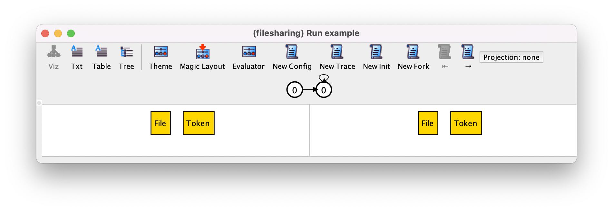When a specification has mutable relations, the instance visualizer is slightly different from what we have seen in the Structural modeling chapter. Below the toolbar, the Alloy visualizer now shows a depiction of the instance trace, which in this case consists of the initial state repeating itself forever, which is a valid behavior because of stuttering. All traces returned by the Alloy Analyzer will have the same shape: a finite sequence of states followed by a loop back to one of the previous (or the same) states. There can be infinite execution traces that are not of this shape, but the tool only returns and depicts traces that can be represented finitely using a back loop.
Todo
nmm: the sentence above is kind of scary without additional context. alcino: maybe its better to remove, as it will probably me mentioned in the temporal logic card.
In the lower part of the window the visualizer
focuses on a particular transition of the trace, depicting the pre- and
post-state using the default Alloy theme: the atoms are named sequentially according to
the signature they belong to, and atoms belonging to a subset
signature (such as uploaded) will be labelled with that signature name.
Mutable sets (and relations) are drawn with dashed borders by default,
but this can be changed in the theme.
In the instance above, there are no such mutable elements, as expected, since fact init is forcing all mutable signatures and fields to be empty in the first state.
The two states being
depicted are the ones shown in white in the trace depiction, and will be kept
centered in that depiction. When the visualizer window pops up
the transition being depicted is always the first one, with the
state on the left-hand side being the initial state of the trace.
To navigate in the trace, namely to move forwards and backwards to focus on a different transition, just press the → or ← buttons in the toolbar (or cmd-→ and cmd-←), respectively. For example, by moving forward to focus on the second transition we get the following, which obviously is another stuttering step.
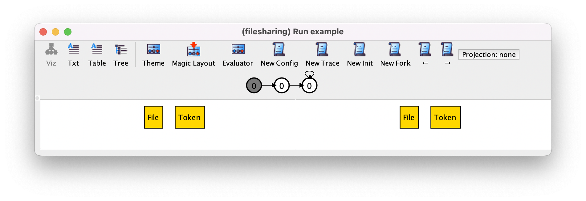In the toolbar of the Alloy instance visualizer window we can also find four new buttons, that can be used to ask the Analyzer for alternative instances:
New Config
This button, or shortcut cmd-c, asks for a new trace that differs in the values of immutable sets and relations. Usually, immutable elements constitute the configuration of a system (for example, describing a specific network topology where a protocol is to be executed), and by pressing this button we will get an execution trace with a different configuration. In the case of the file sharing app, the only immutable relations are signatures
FileandToken, so pressing this button should give us a trace with a different number of files or a different number of tokens.
New Trace
This button, or shortcut cmd-t, asks for a new (different) execution trace with the same configuration.
New Init
This button, or shortcut cmd-i asks for a new trace with a different initial value for mutable sets and relations, allowing us to quickly explore a scenario starting with different initial conditions. In our example, for each configuration there is only one possible initial state, so pressing this button will not return any instance.
New Fork
Finally, this button, or shortcut cmd-f, asks for a different trace with the same behavior up to the (left-hand) pre-state we are currently focused, but a different transition at this point. If that is possible, the pre-state will remain the same and we will see a different post-state. The latter could be a different result for the same (non-deterministic) event, or the outcome of a different event.
For example, if at this point we press New Config we could get the following trace, where we have two possible tokens but the system still stutters forever.
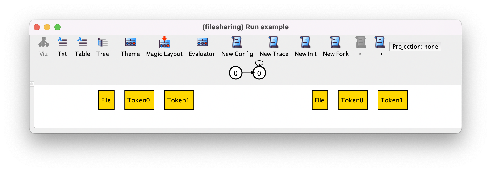If now we press New Trace we may get the following trace.
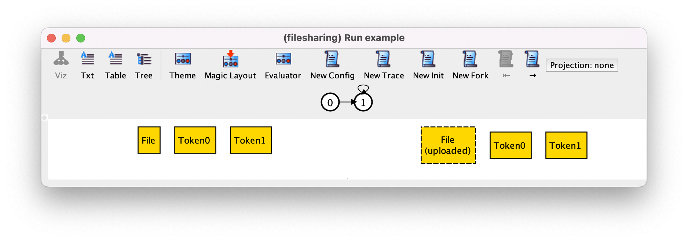In this trace, the first transition is the upload of the only file in the universe, and then the system stutters forever, as can be seen in the trace depiction. Pressing New Trace again could produce the following trace, where the first transition is again a stuttering step.
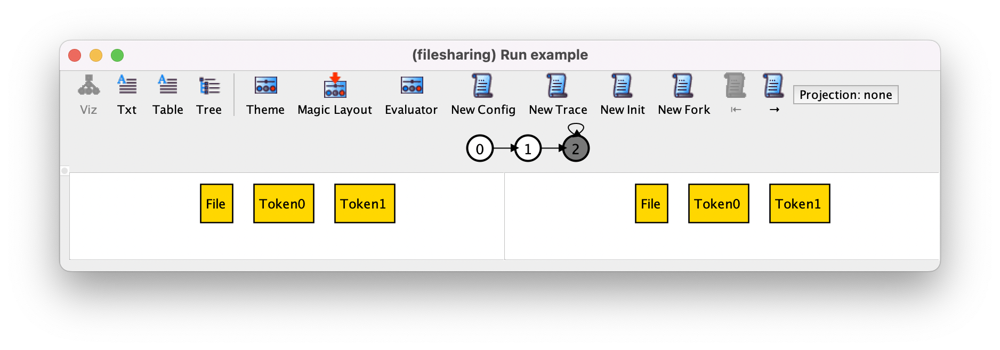To see the second transition, which is the upload of the file, we can press →.
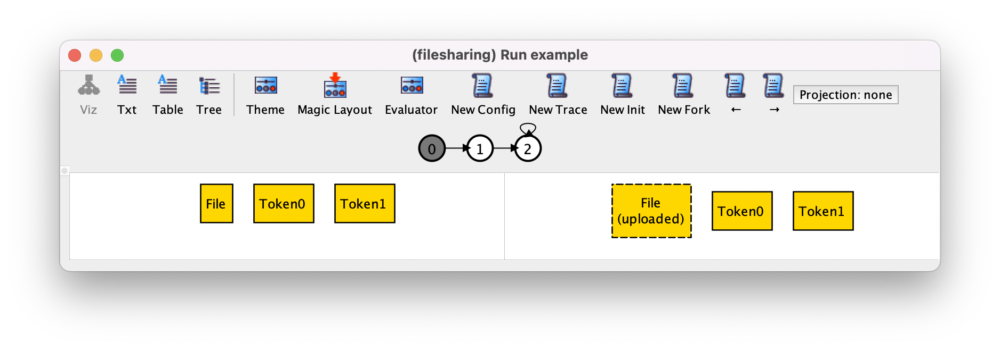Before proceeding with the validation of our specification, let’s change our visualization theme, for example by setting different colors for files not currently uploaded (white), uploaded files (yellow), and trashed files (red), and different shapes for files (circles) and tokens (rectangles), with the latter also colored gray. Finally, hide the subset labels and change the color palette. After customizing the theme the above transition will be displayed as follows.

While New Trace allows some quick validation of the specification, New Fork is the main tool used in this task, since it allows us to quickly narrow our exploration to the behaviors of interest, instead of just pressing New Trace until they eventually show up. For example, let us suppose we wanted to see if the following sequence of actions is possible: upload a file, share it with two different tokens, download it with one token, delete it, and finally empty the trash. To search for this scenario, we first re-execute our command, and press New Config to get the desired configuration with one file and two tokens.
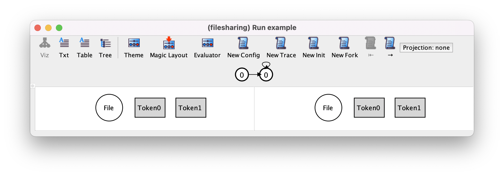Pressing New Fork will necessarily change the stuttering step to a file upload, because that is the only other action that can occur at this point.
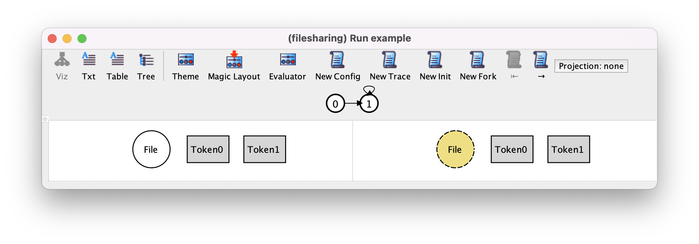Pressing → to move to the second transition, which is a stuttering step, and pressing New Fork may produce the following trace, where the uploaded file is trashed and then the trash emptied, moving the system back to the initial state. Notice in the trace depiction how in this infinite trace the last state loops back to a state other than itself.
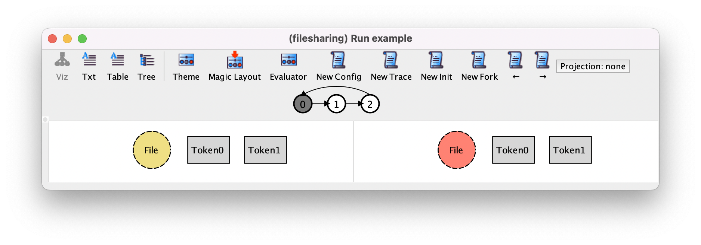Since this is not the behavior we want to explore, we can press New Fork again to change this transition to a sharing action (the only other possible action).
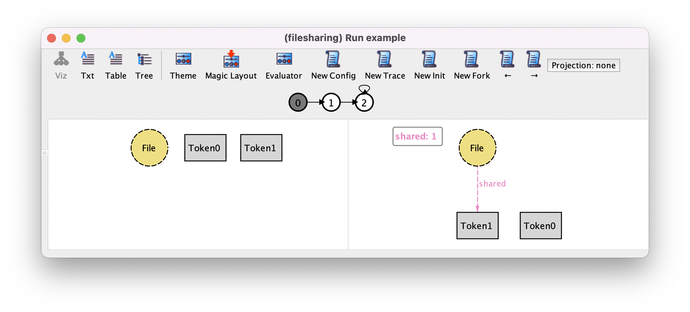Pressing → and New Fork may show us the second share action.
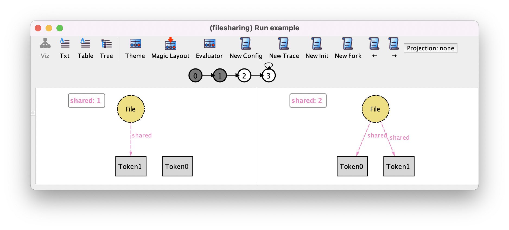By repeatedly pressing these buttons we can produce the remaining steps of our desired scenario.
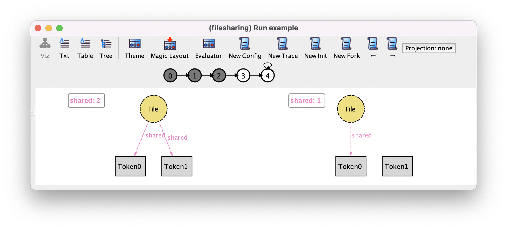 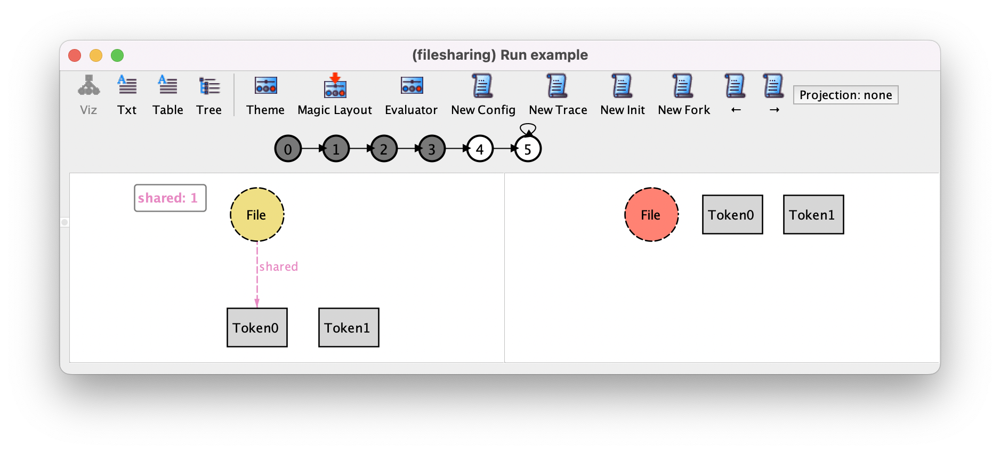 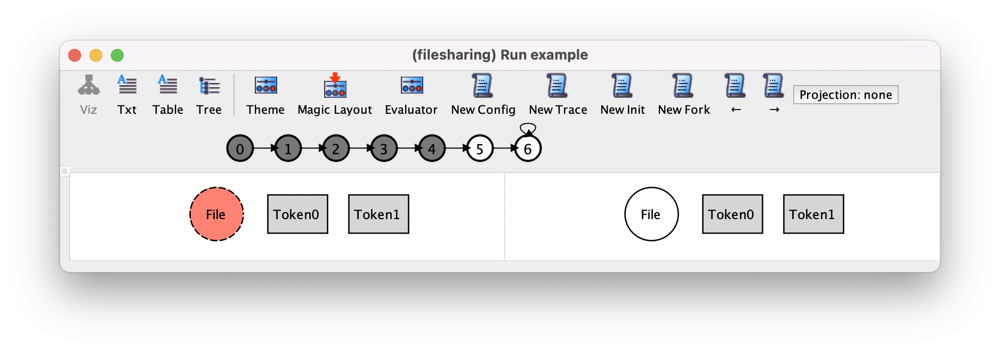We can also use New Fork to check that no unexpected behaviors can happen. For example, at this point the only other possible action should be the following restore action.
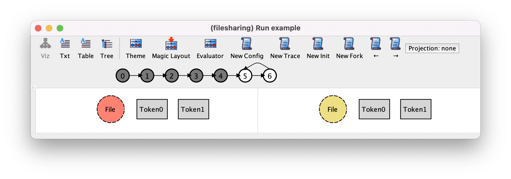We can confirm this by pressing New Fork and see if the “The are no more satisfying instances” error window appears, which is the case here.
{kind=link}
Verifying expected properties#
After validating the design of our file sharing app we proceed with the specification and verification of some properties that are expected to hold.
A nice thing about Alloy is that the same logic is used to
both specify the system and its expected properties. In many formal
specification languages and verification tools (namely, most model
checkers), a different language is used for each. In Alloy we use
linear temporal logic, of which we already presented some operators, namely the fundamental always and eventually operators, and also the after operator, that requires a formula to be true in the next state (which always exists because traces are infinite).
These are examples of operators that constrain the future behavior in a trace, but in Alloy we also have operators that constrain the past behavior. We already saw one example of the latter, namely the historically operator that forces a formula to always be true in the past (including the current state). Alloy has a few more temporal operators. For example, we have once that requires a formula to be true sometime in the past (or in the current state), and before that requires a formula to be true in the previous state (if evaluated in a initial state it will always be false because there is no previous state). All these are unary operators, but Alloy also has a few binary temporal operators. One of the most useful is releases, that enforces the right-hand side formula to only stop being true after the left-hand side formula becomes true.
As we have already seen, formulas that we want to verify with check commands can be written in
assertions. The most frequent (and simple) temporal properties we can specify with temporal logic are invariants, formulas requiring some constraint to be true in all states of all possible behaviors. These can be specified with a single always followed by the invariant property. For example, an invariant that should be valid in our app is that all shared files should still be uploaded and not in the trash. This assertion can be specified and checked as follows.
assert shared_are_accessible {
always shared.Token in uploaded - trashed
}
check shared_are_accessible
As expected, the check yields no counter-example. Another expected property could be that a restore undoes a delete action, something we can specify as follows.
assert restore_undos_delete {
all f : File | always (
delete[f] and after restore[f] implies
uploaded'' = uploaded and trashed'' = trashed and shared'' = shared
)
}
check restore_undos_delete
Here we used the after operator to check that the restore action occurred after the delete, and a double prime to evaluate the value of the mutable fields two states ahead and check that that value is same as before executing the delete. Checking this assertion will actually yield the following counter-example, where a file has an associated token which is removed when the file is delete and is not recovered by the restore.
If we really wanted this property to hold we could change our design in two ways: either keep the associations between files and tokens when deleting them or forbid the deletion of shared files. The converse assertion that delete undoes restore does hold in the current specification.
A key property of our app is that tokens are single use. We can check that indeed that is the case, by checking that after downloading a file with a token that token can no longer be used to download another file.
assert one_download_per_token {
all t : Token | always (
download[t] implies
after always not download[t]
)
}
check one_download_per_token
Notice how here we use two nested always operators to say that whenever a token is used, from then on it will not be used again. The inner always is coupled with an after because it only applies to the states after the download occurs: otherwise we would be forcing download[t] and not download[t] in the same state.
To make the specification of this assertion more readable we can define a function that returns the set of files that were once downloaded with a given token. In Alloy we can use the set comprehension notation to define a set or a relation. As usual, to define a set by comprehension we use a predicate defined over a quantified variable: any atom that satisfies the predicate will be included in the resulting set. The desired function can be defined as follows.
fun downloaded [t : Token] : set File {
{ f : File | once (download[t] and t in f.shared) }
}
Using this function the previous assertion could alternatively be specified as follows.
assert one_download_per_token {
all t : Token | always lone downloaded[t]
}
To give an example of releases consider the following assertion (also valid in our system), stating that after emptying the trash, it can only be emptied again after a file is deleted.
assert empty_after_restore {
always (
empty implies
after ((some f : File | delete[f]) releases not empty)
)
}
check empty_after_restore
The formula (some f : File | delete[f]) releases not empty is true in a state iff not empty only stops being true after some f : File | delete[f], that is the trash can only be emptied after some file is deleted. If a file is never deleted then the trash bin can never be emptied again. By nesting this formula inside an always we require it to hold in every state after an empty is performed. The after used here is important, because without it we would require (some f : File | delete[f]) releases not empty to hold in every state just before an empty is performed, and that would require not empty to already be true in that state, which would be a contradiction.
All properties we checked so far are examples of safety properties, which are properties that forbid “bad” behaviors from happening. We can also specify and check liveness properties, that force some “good” behaviors to happen. For example, the following assertion states that every file that is deleted and never again restored will eventually disappear.
assert non_restored_files_will_disappear {
all f : File | always (
delete[f] and after always not restore[f] implies
eventually f not in uploaded
)
}
check non_restored_files_will_disappear
To satisfy this property the system is forced to make progress in a specific situation to produce the expected behavior, namely to eventually perform an empty when a file remains forever in the trash. Of course that will not be the case in our system because when a file is in the trash actions can still be performed in other files, and even if there is only one file that is deleted and never restored the system can still stutter forever. Allowing stuttering is a good practice, but sometimes we may wish to forbid unrealistic behaviors where the system opts to stutter forever, never making progress even if some action is enabled. The constraints that forbid those kinds of unrealistic behaviors are known as fairness restrictions, because they force the environment to somehow be fair to the system allowing it to make progress once in a while. Fairness can be imposed on the whole system or on specific actions, and they are used many times to impose assumptions about the environment without having to specify in detail how it behaves. For example, when specifying concurrent algorithms it is common to impose restrictions that force the system to be fair to all threads, allowing all of them to execute once in a while. This could alternatively be achieved by specifying in detail how the operating system scheduler works, but when the focus is the verification of the concurrent algorithm that detail is unwelcome.
In our file sharing app, we actually expect the system to periodically empty the trash to free up resources. In the real system, this would probably be encoded with some sort of timer, but at this abstract level we just want to forbid behaviors where this action never occurs without having to detail how that process works. So we can impose a fairness restriction on the empty action, requiring it to eventually occur if at some point it becomes continuously enabled. That could be specified with the following fact.
fact fairness_on_empty {
always (
always some trashed implies
eventually empty
)
}
With this fact the above assertion non_restored_files_will_disappear becomes valid, because if a deleted file is never restored then action empty will be always enabled and thus required to eventually occur, causing the file to be removed from the uploads.
As already discussed in chapter Structural modeling, it is important to stress that the fact that a check command yields no counter-example instances only means that the assertion is most likely valid. Recall that every command has a, sometimes implicit, scope on top-level signatures. For example, the following command (the first in this section) only checks if the invariant assertion is valid for configurations with up to 3 files and up to 3 tokens.
check shared_are_accessible
In Alloy, commands
also have a scope on the size of the finite prefix of traces that
precedes the mandatory back loop. By default this scope is 10, meaning
that the verification engine only checks for counter-example traces with at
most 10 different states (and transitions). This is a verification
technique known as bounded model checking. The Alloy Analyzer
searches for counter-examples of increasing length, and is guaranteed
to return the shortest one, if some exists. To change this bound just
assign a different value to the special scope steps. For example, to
verify the same assertion for systems with up to 4 files and tokens and
traces with at most 20 different states the scope could be set as
follows.
check shared_are_accessible for 4 but 20 steps
This command also yields no counter-examples. With such a large scope it is
thus very likely that our assertion is indeed valid. In Alloy the analysis is
always bounded in respect to the signatures, but we can perform unbounded model
checking (or complete model checking) in respect to the size of the traces,
essentially verifying properties for traces composed by an arbitrary number of
states (which is necessarily finite since the signatures are bounded). To do so we must first choose a solver in the Options
menu that supports unbounded model checking. At the moment only the
nuXmv or NuSMV solvers support that feature. The solver is the low-level verification tool
that the Analyzer uses in the backend to perform the actual search for
instances and counter-examples. These two solvers are well-known model checkers and must be installed separately from the Alloy Analyzer.
For bounded model checking, many different
solvers can be used, including the two above but also several SAT solvers that came packaged with the Analyzer. Notice that some solvers may be considerably faster than others in
particular examples, so it is always worthwhile to try different options if your
analysis commands are very slow. To verify our property for systems with
up to 4 items and traces of any length the scope would need to be set as follows.
check shared_are_accessible for 4 but 1.. steps
Wrap-up#
module filesharing
sig Token {}
sig File {
var shared : set Token
}
var sig uploaded in File {}
var sig trashed in uploaded {}
fact init {
// Initially there are no files uploaded nor shared
no uploaded
no shared
}
// Superseded by fact transitions_or_stutter
// fact transitions {
// // The system must only evolve according to the defined actions
// always (
// (some f : File | upload[f] or delete[f] or restore[f]) or
// (some f : File, t : Token | share[f,t]) or
// (some t : Token | download[t]) or
// empty
// )
// }
fact transitions_or_stutter {
// The system either evolves according to the defined actions or stutters
always (
(some f : File | upload[f] or delete[f] or restore[f]) or
(some f : File, t : Token | share[f,t]) or
(some t : Token | download[t]) or
empty or
stutter
)
}
pred empty {
some trashed // guard
no trashed' // effect on trashed
uploaded' = uploaded - trashed // effect on uploaded
shared' = shared // no effect on shared
}
pred upload [f : File] {
f not in uploaded // guard
uploaded' = uploaded + f // effect on uploaded
trashed' = trashed // no effect on trashed
shared' = shared // no effect on shared
}
pred delete [f : File] {
f in uploaded - trashed // guard
trashed' = trashed + f // effect on trashed
shared' = shared - f->Token // effect on shared
uploaded' = uploaded // no effect on uploaded
}
pred restore [f : File] {
f in trashed // guard
trashed' = trashed - f // effect on trashed
uploaded' = uploaded // no effect on uploaded
shared' = shared // no effect on shared
}
pred share [f : File, t : Token] {
f in uploaded - trashed // guard
historically t not in File.shared // guard
shared' = shared + f->t // effect on shared
uploaded' = uploaded // no effect on uploaded
trashed' = trashed // no effect on trashed
}
pred download [t : Token] {
some shared.t // guard
shared' = shared - File->t // effect on shared
uploaded' = uploaded // no effect on uploaded
trashed' = trashed // no effect on trashed
}
pred stutter {
uploaded' = uploaded // no effect on uploaded
trashed' = trashed // no effect on trashed
shared' = shared // no effect on trashed
}
run example {}
assert shared_are_accessible {
always shared.Token in uploaded - trashed
}
check shared_are_accessible
check shared_are_accessible for 4 but 20 steps
check shared_are_accessible for 4 but 1.. steps
assert restore_undos_delete {
all f : File | always (
delete[f] and after restore[f] implies
uploaded'' = uploaded and trashed'' = trashed and shared'' = shared
)
}
check restore_undos_delete
fun downloaded [t : Token] : set File {
{ f : File | once (download[t] and t in f.shared) }
}
assert one_download_per_token {
// Alternative formulation
// all t : Token | always (
// download[t] implies
// after always not download[t]
// )
all t : Token | always lone downloaded[t]
}
assert empty_after_restore {
always (
empty implies
after ((some f : File | delete[f]) releases not empty)
)
}
check empty_after_restore
fact fairness_on_empty {
always (
always some trashed implies
eventually empty
)
}
assert non_restored_files_will_disappear {
all f : File | always (
delete[f] and after always not restore[f] implies
eventually f not in uploaded
)
}
check non_restored_files_will_disappear